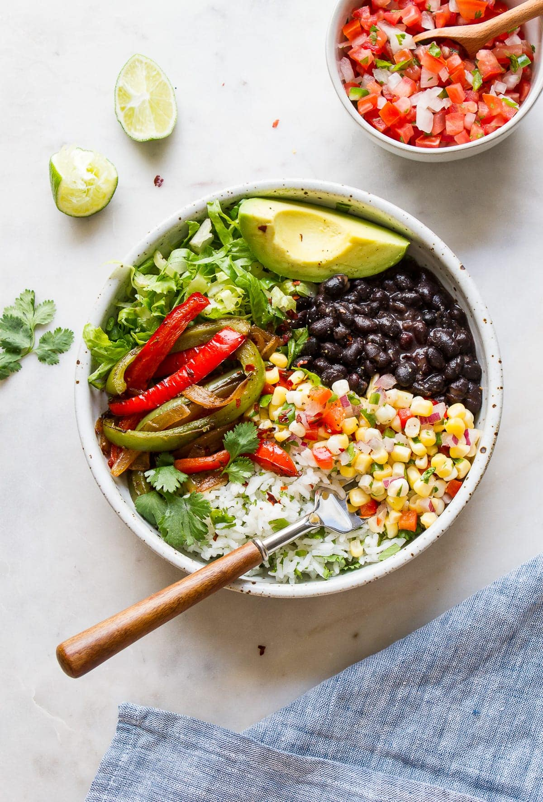

Veggie burrito bowl

Simple, healthy, flavor packed burrito bowls are ready in under 10 minutes.
Ingredients
Burrito bowl
- 1 can(15 oz) black beans, rinsed ad drained
- 1 cup frozen corn kernels
- 1 jar (12oz) Salsa
- 1 red bell pepper, seeded and diced
Creamy Avocado Sauce
- 1 avoccado, smashed
- 1/3 cup unsweetened, plain yogurt
- 1 tablespoon lime juice
- 2 teaspoon cumin
- 1/2 teasponn chili powder
- 1/2 teaspoon salt
- 1/4 teaspoon black pepper
Steps
- Cook the instant rice according to package directions (this usually takes about 5 to 10 minutes depending on brand).
- While the rice is cooking, combine all ingredients for the Creamy Avocado Sauce, if using, in a small bowl and stir well to combine. Add additional yogurt, if needed, to reach your desired sauce consistency. Set aside.
- When the rice is done add the black beans, corn, and salsa to the same pot. Cook over medium heat, stirring occasionally until heated through, about 5 minutes.
- Take off the heat, add the bell peppers and cilantro.
- Serve with tortilla chips or over chopped Romaine lettuce with a drizzle of the Creamy Avocado Sauce.
Main page